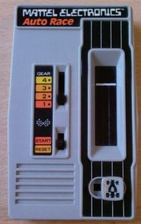

Mattel Auto Race
The first handheld electronic game — two slide switches, 512 bytes of assembly, and a field of red LEDs

Overview
Mattel Electronics Auto Race was released in 1976 as the first handheld electronic game to use only solid-state electronics — no mechanical elements except the controls and the on/off switch. Cars are red LEDs on a small playfield covering only part of the case; the audio consists of beeps. Powered by a nine-volt battery, the game runs on hardware repurposed from calculators.
The interaction model is the point. There are no buttons: the player steers with a three-position lane switch that toggles the car between three lanes, and shifts speed with a separate four-position gear switch — and the higher the gear, the faster the oncoming cars come. Both hands stay on the levers while the eyes track a tiny field of red dots, making a 99-second dash up a three-lane road four times to win.
George J. Klose, a product development engineer at Mattel, conceived of repurposing calculator hardware into a game. He built a proof of concept on an LED display without a microprocessor to get approval, then partnered with Rockwell International's Microelectronics Division, a leader in calculator chips. Rockwell engineer Mark Lesser modified the B5000 calculator chip into the B6000, adding a display driver multiplexing scheme and a custom sound driver, then wrote the entire game in 512 bytes of assembly — spending eighteen months making the code fit. Sound is produced by toggling the speaker from within embedded timing loops. The game sold for US$24.99, exceeded expectations, and convinced Mattel to create its Electronics division in 1978.
Deep dive
Auto Race's entire interface is a pair of slide switches: a 4-position gear lever (1-4) and a 3-position lane lever. There is no button anywhere on the device. Thumb-on-lever driving was a completely new posture for electronic games — the player performs the whole interaction through two discrete mechanical gestures while reading a field of LEDs. The manual grades lap times from 'World Champion Driver' (under 30 seconds) to 'Leave Car In Garage' (75 seconds or more).
The game runs on a Rockwell B6000 chip derived from the B5000 calculator controller — a 4-bit architecture never meant to run games. Mark Lesser wrote the game in assembly in 512 bytes of ROM and took eighteen months to fit the program into that budget. The piezo sound is generated by toggling the speaker inside timing loops. A complete video game living inside the memory footprint of a pocket calculator.
Auto Race pioneered the category of handheld electronic video games. It spawned a line of Mattel sports handhelds (Football, Baseball, Basketball), was reworked into Missile Attack (1976) and Battlestar Galactica Space Alert (1978), reskinned as Ski Slalom (1980), and was even cloned in the Soviet Union as the Elektronika IER-01 (1983). Its place in the lineage of handheld gaming is foundational.
The success of Auto Race convinced Mattel to proceed with Football — often sold out and in short supply — and led to the creation of the Mattel Electronics Division in 1978. The game remains playable today through emulators and is preserved in the Internet Archive's handheld game collections.
Team & pioneers
- George J. Klose. Mattel product development engineer; conceived Auto Race as a repurposing of calculator hardware, designed the gameplay and proof-of-concept prototype.
- Mark Lesser. Circuit design engineer at Rockwell International's Microelectronics Division; modified the B5000 into the B6000 and wrote the 512-byte game program.
- Mattel Electronics. Publisher; formed the division in 1978 on the strength of Auto Race and Football sales.